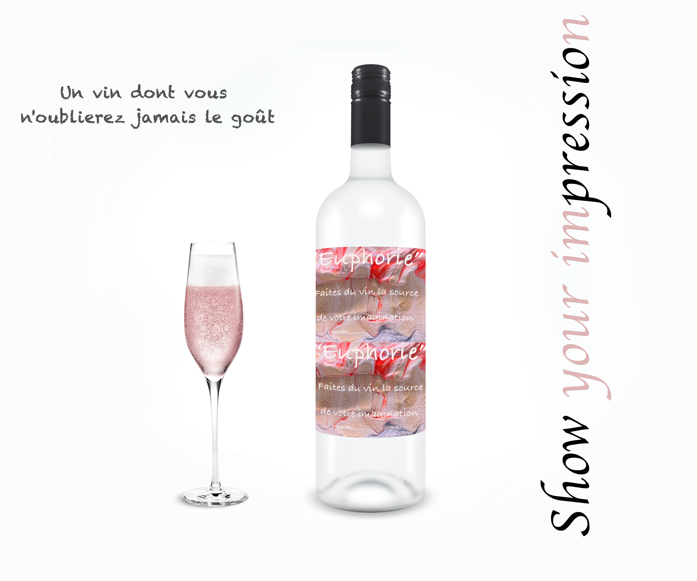

Euphories has as sweet as dry rose
pink wine with a lighter flavor profile than red wine.

Rosé wines can be anywhere from syrupy sweet to bone dry. Older Rosé varieties produced in France and Spain will generally be quite dry, while newer Rosé wines will often have more sweetness.
Champagne rosé, being a sparkling wine from the Champagne region of France, often comes with a premium price due to the region's reputation and the traditional method of production.